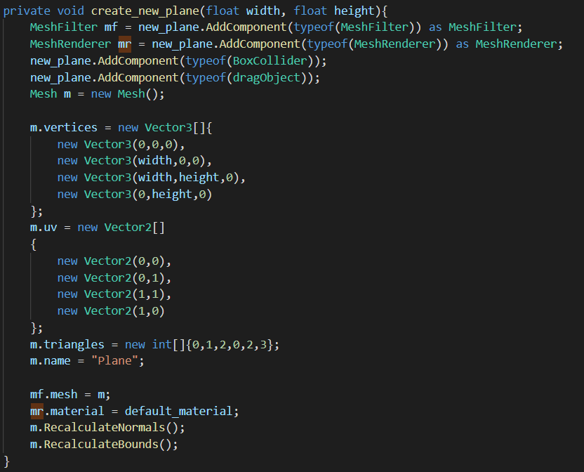

Initial Tool Development (10/7/2020)

For this week, I began implementing a tool that could generate procedurally generated maps. These maps will not be complete levels, but instead a base for which a level designer can take and block out.
Access most recent webbuild here: Click Link
Email followup with Benoit Martinez (1 hour)
Benoit Martinez, a technical artist for Ubisoft, replied back to me with several resources regarding the procedural tools used to build Ghost Recon: Wildlands (discussed in previous week post). I sent him a reply with a few questions regarding his experience:
- For Ghost Recon Wildlands, roughly how many developers did your tools support?
- During Ghost Recon Wildlands' development, how did your team make sure that the changes made by the procedural tools did not overwrite parts of the level that needed to be saved and left unmodified?
- In the GDC vault video you sent me (around 53:37 mark), you mentioned that over 145 procedural tools were developed for Wildlands. Was there any consideration for creating these tools in a way that they could be reused in future Ubisoft projects?
- There was 1 graphics engineer, 4 technical artists who worked on the Houdini-Engine tools mentioned in the above video, and 1 tools engineer who integrated Houdini into the team's in-house level editor.
- The developers utilized exclusion zones, which generate as much content as possible (terrain, rivers, roads, etc.). Once this was done, the level designers who were in charge of specific locations can decide to include and exclude layers of the environment they are working on.
- The team originally wanted to have tools reusable across projects; however, projects tend to have very specific needs, so that was not always possible. It takes a significant amount of time to create agnostic tools; so ultimately, most must be made with a specific context and engine in mind. However, the underlying pipeline can some tools can be carried over into other projects, depending on if those projects have similar constraints and similar engine.
Beginning Tool Development (5 hours)
In the previous blog post, I mentioned how I wanted to narrow my project to tackle specific problems within level design. For the next few weeks, I will be tackling the initial stages of the development of a level. For the following 2 weeks or so, I want to explore how procedural generation can be used to help to prototype and block out levels. For this week specifically, I began to implement a unity web build which will let users generate a plane mesh with Perlin noise, and download the mesh as an FBX file. My idea is that this plane can be used as a starting point for blocking out a level. It is meant to be a rough start, something that a designer can take and develop further.
I started by making a panel that will coontain basic options for manipluating the plane, then worked on a way to get the mesh to be present in front of the panel. I wasn't able to find a responsive way to do it (ideally, we will calculate the center of the panel, and have the mesh appear there), but the way it is set up now is to find. For the next step, I tried to find a way that we can move the layer around using the mouse. The code for doing this is simple with Unity's "Mouse functions". However, I ran into a strange issue attaching the code to the mesh object. When the mesh is built at runtime, the mouse code refused to work. I was able to determine that the mesh needed a "box collider" to be movable; but even when I added this component in my project code, the mesh still did not move:  What I ended up doing was just having a default plane on top of the canvas, and let the user modify it from there. I also spent time figuring out how you can rescale a mesh using the mouse; however, I was not able to find a way due to time constraints. I will be taking a look at the mouse API to see if it has anything promising. The reset button will instead be used to reset the position of the mesh and the perlin noise settings: I discuss the Perlin noise generation in more detail in my prototype post. However, he is a summary of what each slider does:- X offset, Y offset: Moves the noise on the x-axis and y-axis. This results in some very interesting patterns.
- Octaves: gives variation to the noise's curves. Each curve has an amplitude (y-axis) and a frequency (x-axis)
- Seed: allows us to further randomize the underlying Perlin patterns using numbers generated from the range of -10000 to 10000.
- Noise Level: The deepness of the noise curves: scale downwards to make curves smaller, scale upwards to make curves bigger.
- Lacunarity: increased the frequency of the octaves.